<mat-sidenav-container>
    <mat-sidenav mode="side" opened>
        <div class="logo" fxLayoutAlign="center center" style="background-color: rgb(0, 52, 76);">
            <!-- <span style="color: white; font-size: 22px; font-weight: 400;">Sensiable</span> -->
            
        </div>
        <div class="buttondiv">
            <button mat-raised-button class="but">
                    <mat-icon style="color: green;">dashboard</mat-icon>
                    <span class="text">Dashboard</span>
            </button>
        </div>
        <div class="buttondiv">
            <button mat-raised-button class="but"  [routerLink]="'/settings'">
                    <mat-icon style="color: green;">settings</mat-icon>
                    <span class="text">Settings</span>
            </button>
        </div>
    </mat-sidenav>
    <mat-sidenav-content>
        <div style="height: 100vh; background-color: rgb(220, 227, 233);">
            <app-sensors-page></app-sensors-page>
        </div>
    </mat-sidenav-content>
</mat-sidenav-container>
